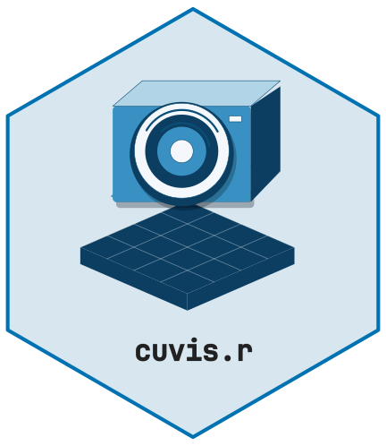
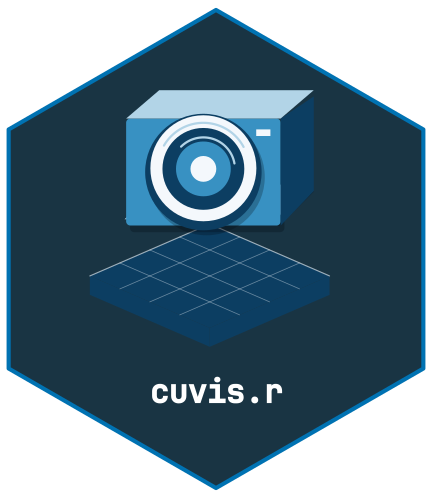

Overview
cuvis.r provides R bindings to the Cubert CUVIS C SDK for reading, processing, and exporting hyperspectral imaging data from Cubert snapshot cameras. It mirrors the API of cuvis.python.
Prerequisites
- Install the Cubert CUVIS SDK (>= 3.4.0) from https://cloud.cubert-gmbh.de/s/qpxkyWkycrmBK9m
- Set the
CUVIS_SDKenvironment variable to the SDK install directory - Install cuvis.r from GitHub:
remotes::install_github("cttir/cuvis.r")Quick Start
Initialize the SDK
Every cuvis.r session begins with cuvis_init() and ends
with cuvis_shutdown():
Load a Session File
Cubert cameras store measurements in .cu3s session
files. Load one with cuvis_session():
session <- cuvis_session("path/to/measurement.cu3s")
print(session)Extract a Measurement
Session files contain one or more measurements. Access them by index (1-based):
mesu <- cuvis_get_measurement(session, 1)
print(mesu)Inspect Metadata
md <- cuvis_get_metadata(mesu)
md$name
md$integration_time
md$serial_number
md$product_nameGet the Data Cube
The hyperspectral data cube is returned as a 3D R array
[rows, cols, bands] with wavelength metadata attached:
# First, process to generate the cube
ctx <- cuvis_processing_context(session)
cuvis_reprocess(ctx, mesu, mode = "raw")
cube <- cuvis_get_cube(mesu)
dim(cube) # e.g., c(100, 100, 61)
attr(cube, "wavelengths") # wavelengths in nmYou can subset bands, compute means, or use standard R array operations:
Export to Standard Formats
# ENVI format (widely supported by remote sensing tools)
cuvis_export_envi(mesu, "output/envi/")
# Multi-channel TIFF
cuvis_export_tiff(mesu, "output/tiff/")Next Steps
- See
vignette("cuvis-r-calibration")for the full calibration workflow (dark/white references, reflectance conversion) - See the cuvis.python examples for workflow patterns that translate directly to cuvis.r